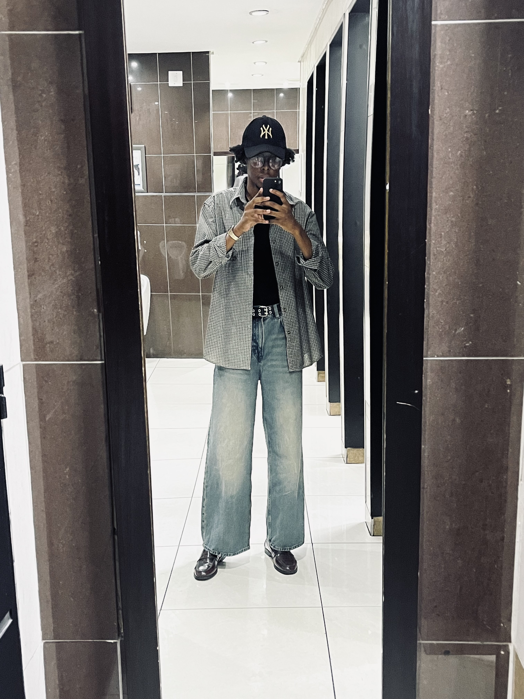
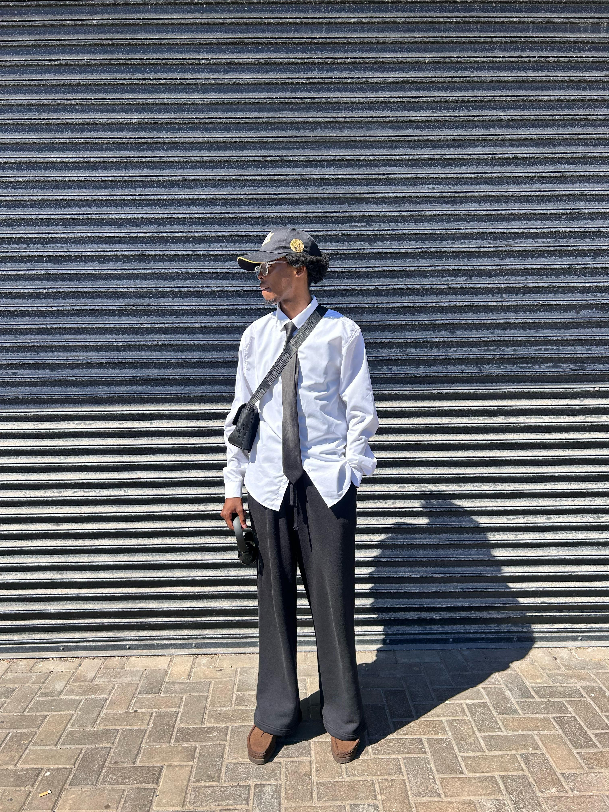
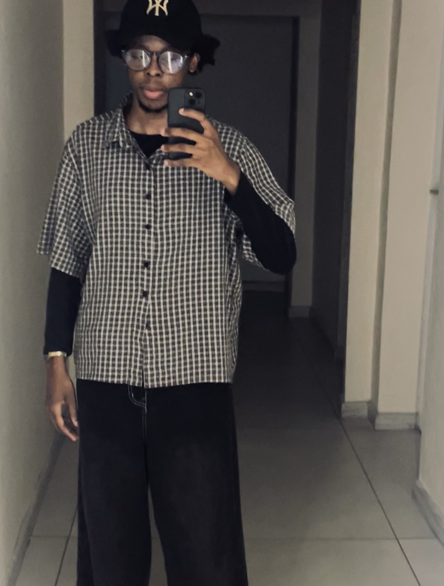

This is a simple get to know me page, displaying information about my background, education and interests.
Hi, I am Linamandla Siswana, a passionate young adult born and raised along the coast of South Africa. I am the second born of 5 children on my paternal side. I was mostly raised by my mother, along with my two brothers, in a coastal town on the north coast of Kwazulu Natal called Richards Bay. I have a strong interest in technology and how people and businesses can use it to solve real-world problems. This website will provide an overview of my background, education, and interests.
I was born at Hibiscus Hospital in Port Shepstone, KZN. I spent my foundational years in Bizana, EC, and later moved to Richards Bay where I was raised till I became an adult.
I attended Turtle Creek Prepatory School, in Port Edward, KZN, where I did my pre-school, and later moved to Margate Primary School, in Margate, KZN, where I initiated my primary education before moving to Arboretum Primary School, in Richards Bay, KZN, where I completed my primary education.
I attended Hoerskool Richardsbaai, in Richards Bay, KZN, where I completed my secondary education. I was an active member of the school's sports teams and received merit awards for academics, choir and hockey(regional colours).
I am currently pursuing a Bachelor of Commerce in Information Systems at the University of Fort Hare, where I am focusing on software development and business and systems analysis. I have completed several projects that have enhanced my skills and knowledge in the field, also securing several distinction passes along the way.
I have a strong interest in technology and how people and businesses can use it to solve real-world problems. Outside of academics, I also enjoy sports, fashion and food.
I am a huge fan of football, my favourite team is the BEST TEAM IN THE WORLD.
I am also into fashion and fragrances. I am obsessed with trying new scents and building my fragrance collection, so I spend a lot of my money on perfumes lol.
I also like food, so I am probably a better cook than you!


